Branding
Ayone
A personal brand identity project for Ayone, a concept skincare line built around a glow-first routine, designed end to end from logo to packaging to lifestyle applications.
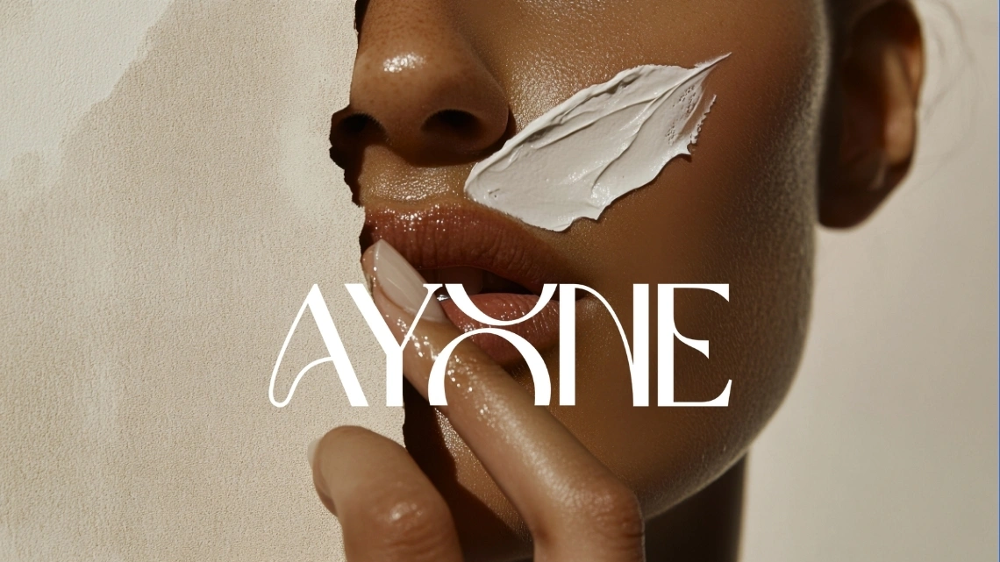
(01) — The brief
The Brief
This project did not come from an external brief. I wanted to design a complete skincare identity from the ground up, logo, color, packaging, and real-world touchpoints, without a client or a deadline shaping the direction. Ayone became the concept: a skincare brand built around a calm, glow-first routine that felt approachable rather than clinical.
To keep the project scoped, I set myself a short list of deliverables:
- Primary logo and logomark
- Color palette
- Packaging design for two products
- Instagram profile and app icon
- Lifestyle and merch applications
Without a set deadline, the challenge here was less about speed and more about being deliberate, refining the wordmark until the shape actually felt intentional, and making sure the packaging looked like it belonged on a real shelf rather than a moodboard.
(02) — The process
The Process
Logo concept
The wordmark reads "Ayone," with the "O" redrawn as a stylized, interlocking ribbon shape rather than a plain circle. It gives the logotype a quiet signature detail in the middle of the name without needing a separate icon bolted on. The standalone logomark pulls that same shape out on its own, paired with a smaller "E," for use anywhere the full wordmark would not fit, like packaging caps, app icons, and social avatars.
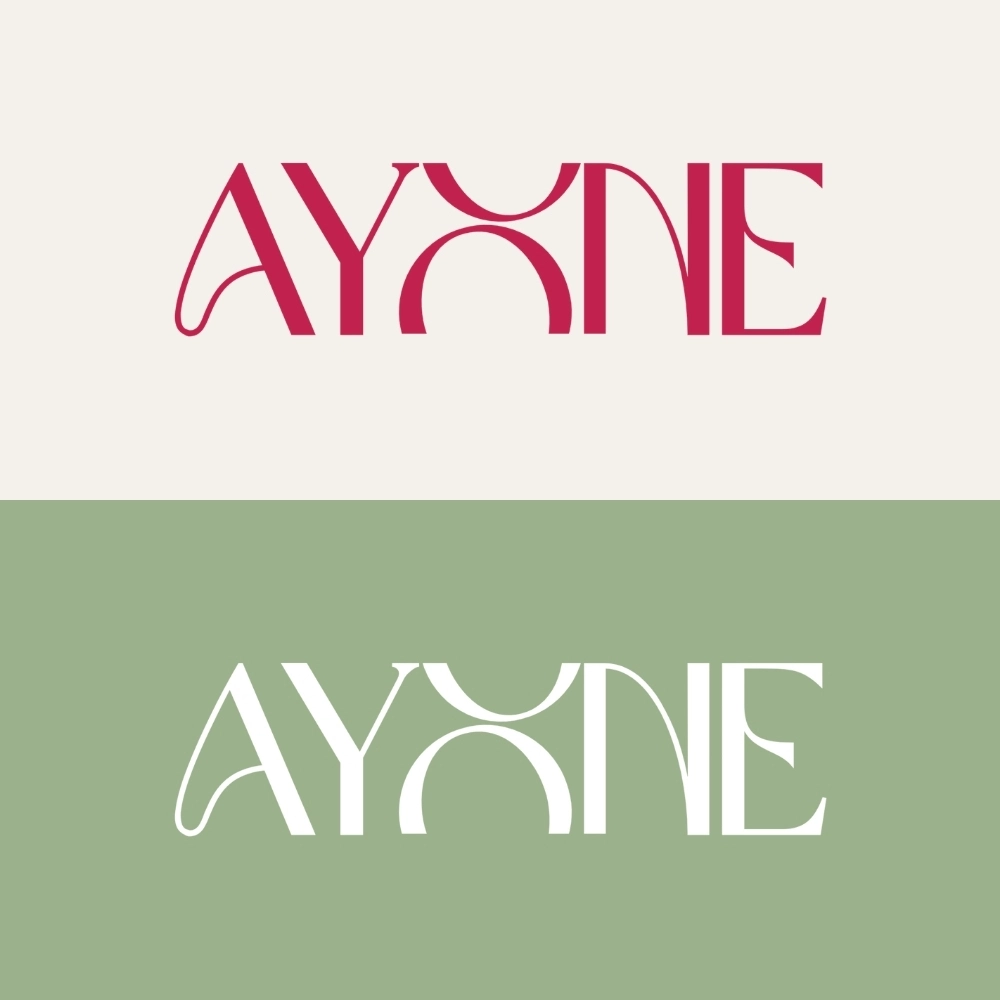
Primary logo shown across the brand's core color palette.
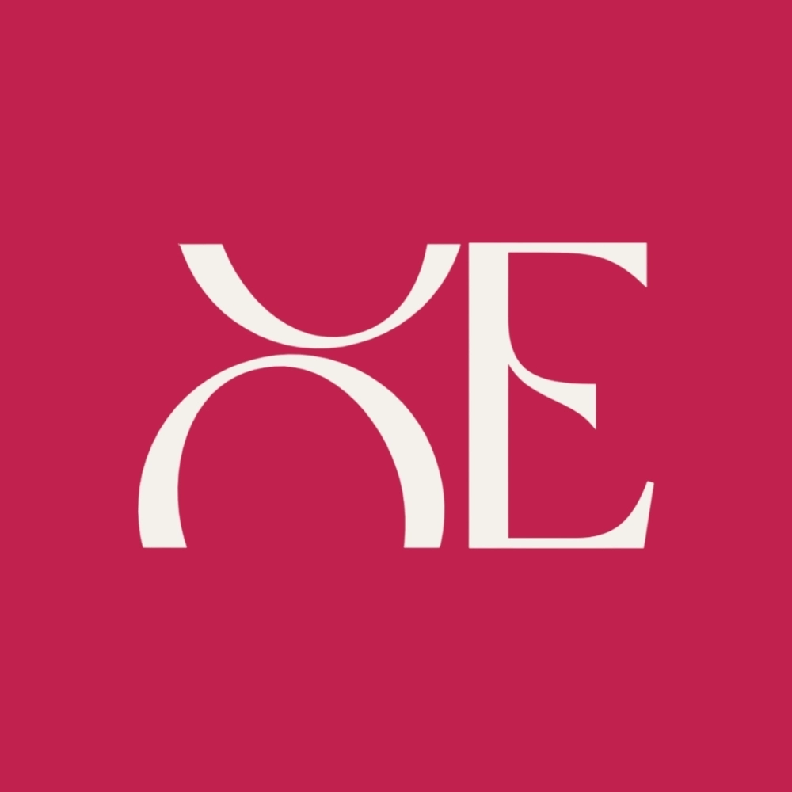
Standalone logomark on the brand's raspberry accent, used for app icons and small-space applications.
Color system
For Ayone, I wanted a palette that felt clean and skin-forward rather than sterile. Raspberry, a deep pink-red, carries most of the brand's energy and shows up across packaging and lockups. Sage sits alongside it as a calmer, more botanical counterpart, standing in for the ingredient side of the brand. Ivory rounds out the palette as a soft, warm neutral, closer to the color of skin and cotton than a flat white.
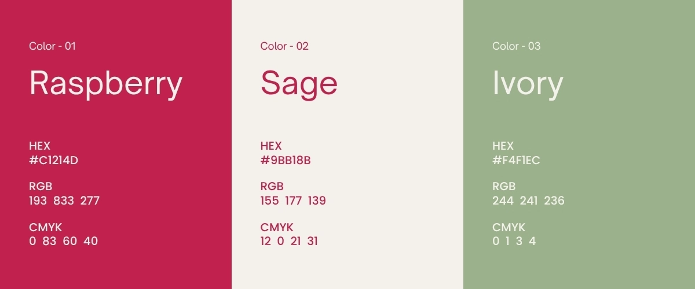
Packaging
With the identity in place, I moved into packaging, since skincare lives or dies on the shelf. I designed a Brightening Toner tube in raspberry and white, with a small grapefruit illustration to hint at the ingredient story, and an Antioxidant Repair Complex serum in a glass dropper bottle using the sage palette instead, so the two products read as one system without feeling identical. Both carry the interlocking logomark as the main packaging graphic, with usage and ingredient details kept small and quiet on the back of the pack.
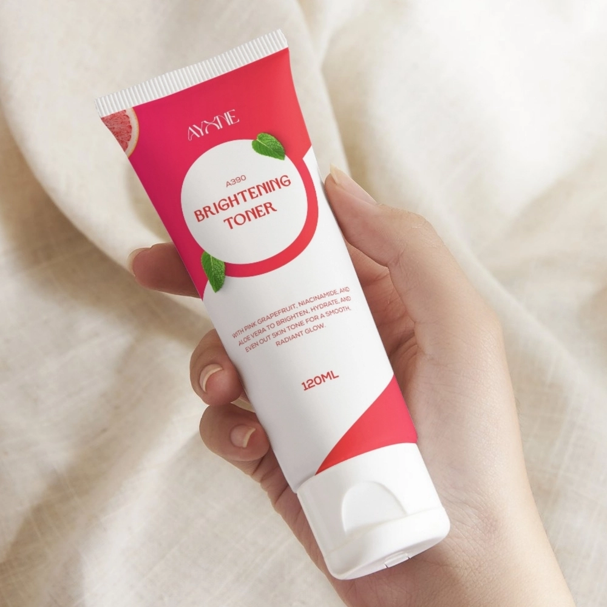
The identity applied to Ayone's brightening toner packaging.
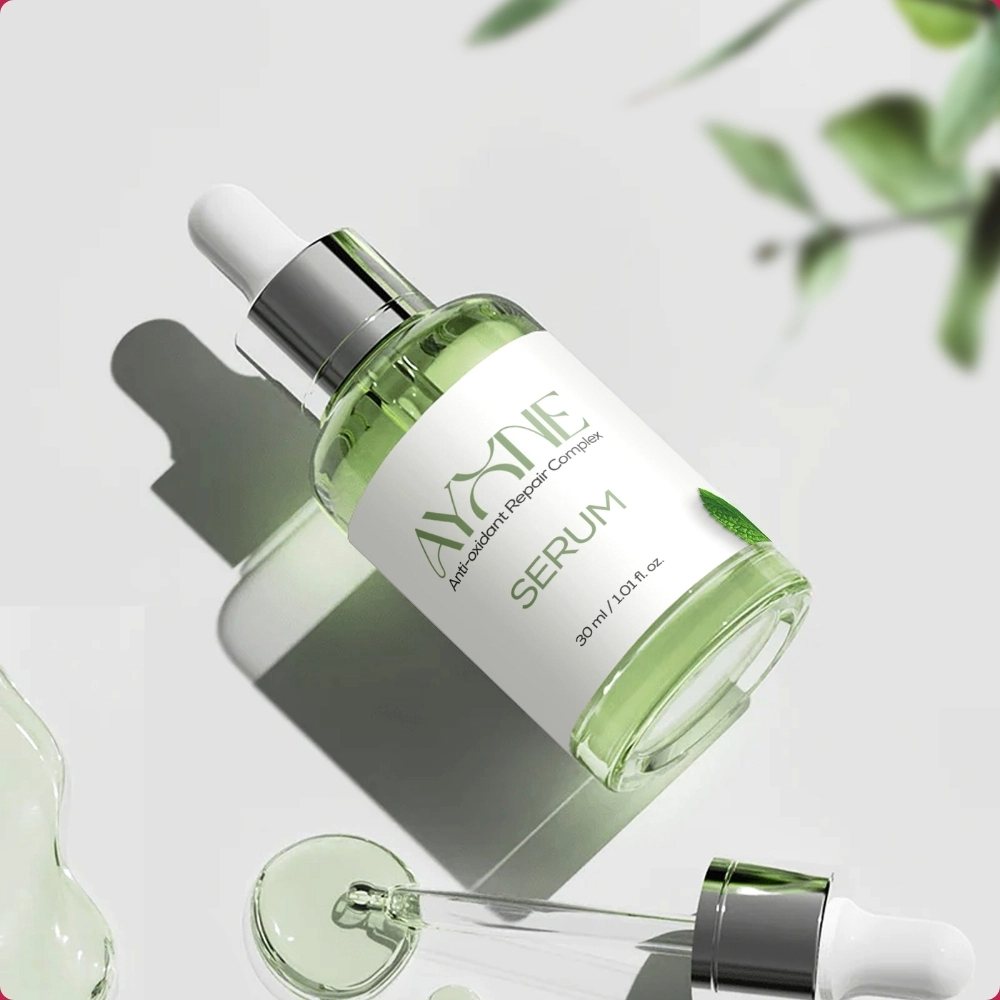
The identity applied to Aynie's antioxidant repair serum packaging.
Mockups
Since this was a self-directed project, showing the identity across real applications mattered even more, it was the only way to test whether the system actually held up outside a moodboard. The last stretch of the project was about placing the logo, color, and packaging into real touchpoints.
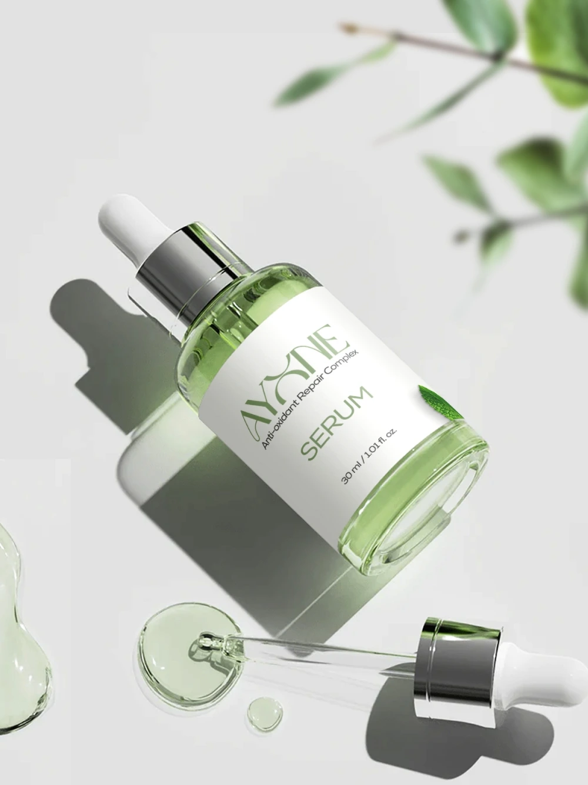
Serum Bottle
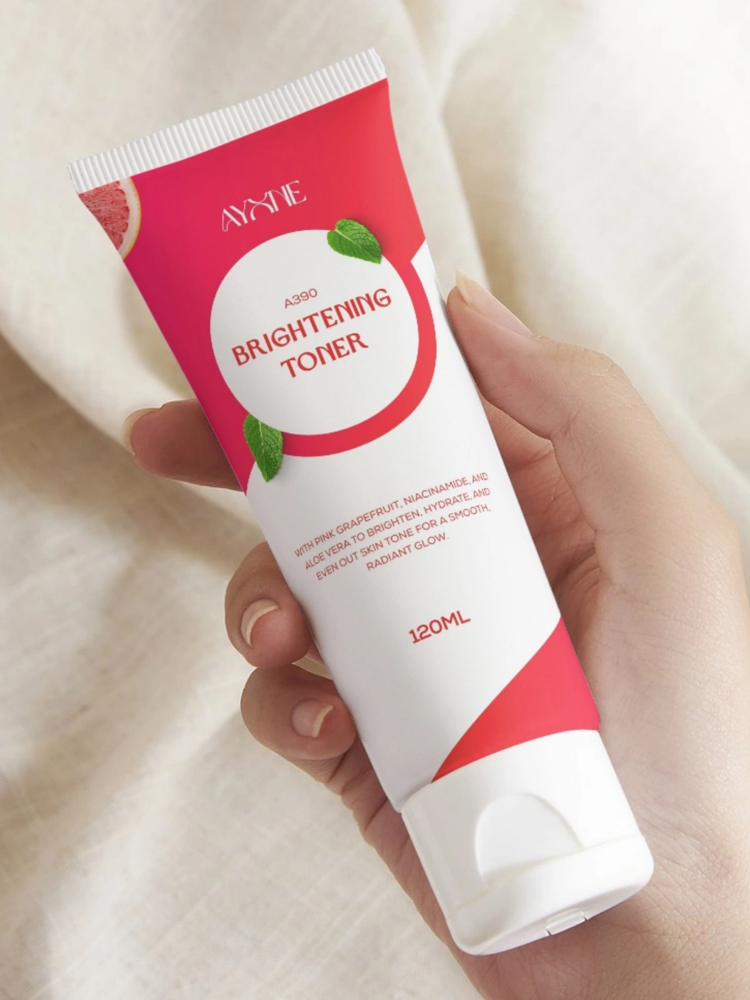
Toner Packaging, Front
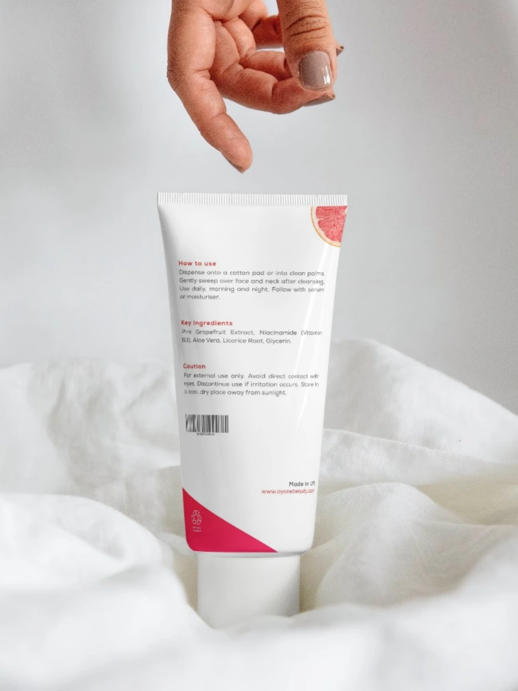
Toner Packaging, Back
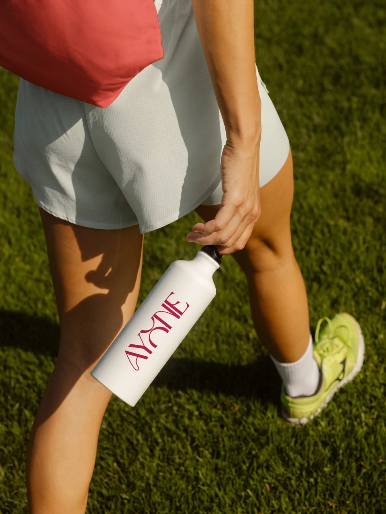
Water Bottle
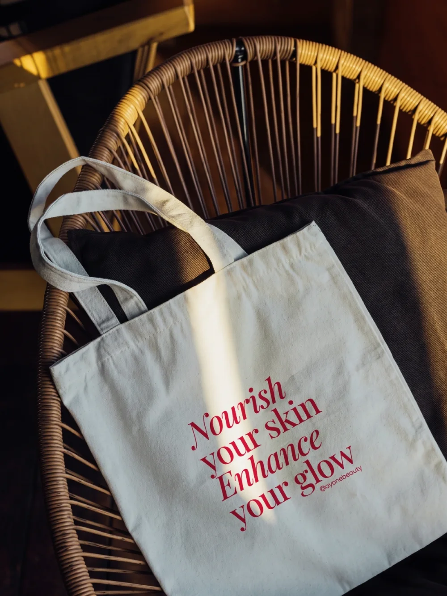
Tote Bag
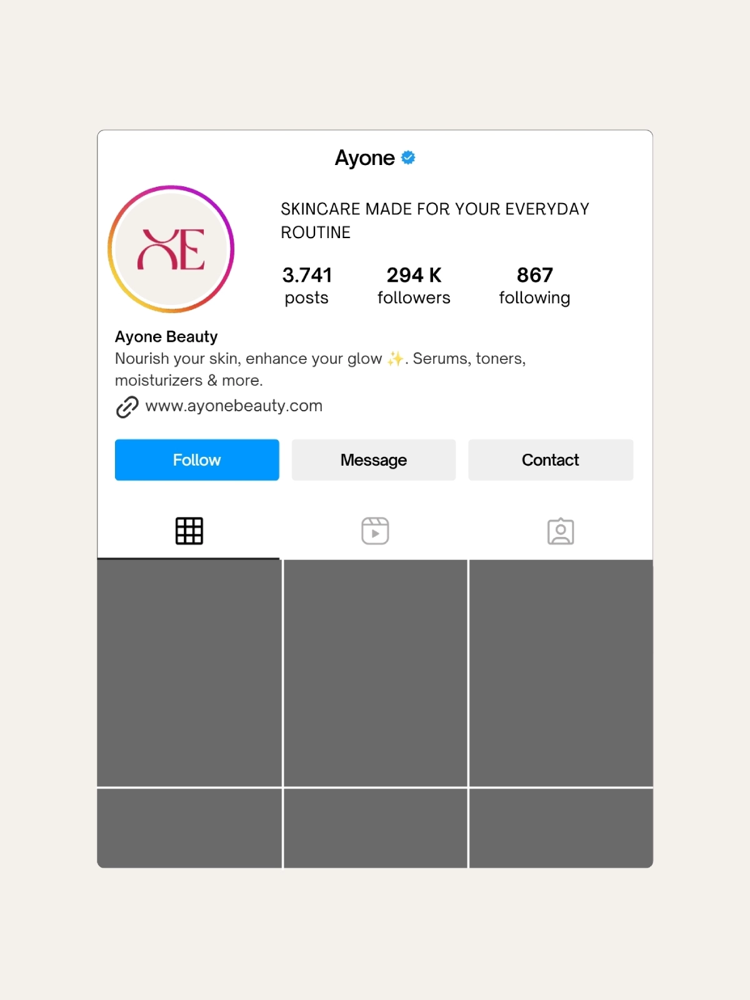
Instagram Profile
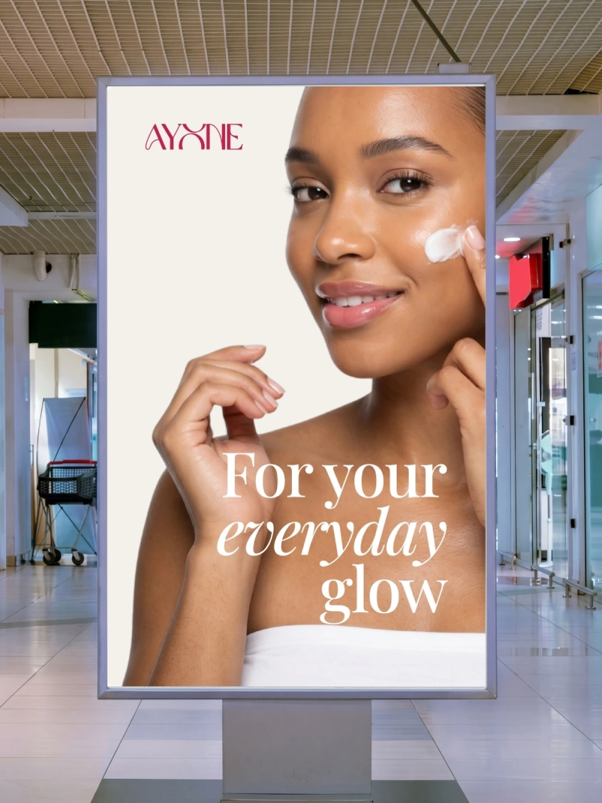
Store Lightbox
Swipe →
(03) — What I learned
What I Learned
Working without a brief or a client meant I had to write my own constraints, which turned out to be harder than following someone else's. It was tempting to keep tweaking indefinitely, so I had to treat my own deliverable list as if it came from a client and hold myself to it.
Packaging pushed me past screen-only thinking. A tube and a glass bottle behave very differently, curved surfaces, printable area, how a label wraps, and I had to figure out how to make both feel like they belonged to the same brand without just repeating the same layout twice.